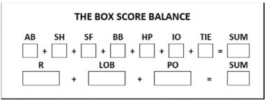

Score-sheet balance
The figures for AB, SH, SF, BB, HP, IO and R are taken from the totals on the offense table of the team whose sheet it is.
|  |
TIE refers to the number of runners that were put on base in case of an extra inning game ( TieBreak ). How to apply the extra inning rule is explained in appendix 2. |
LOB refers to the total number of runners Left On Base of the team whose sheet it is; this should be taken from the relevant box under the column for the final inning of the game.
PO refers to the total number of players Put Out, recorded in the defense statistics of the opposing team.
IMPORTANT: The totals obtained from both test sums should be the same. If not, all of the pertinent figures must be re-examined to find the error.